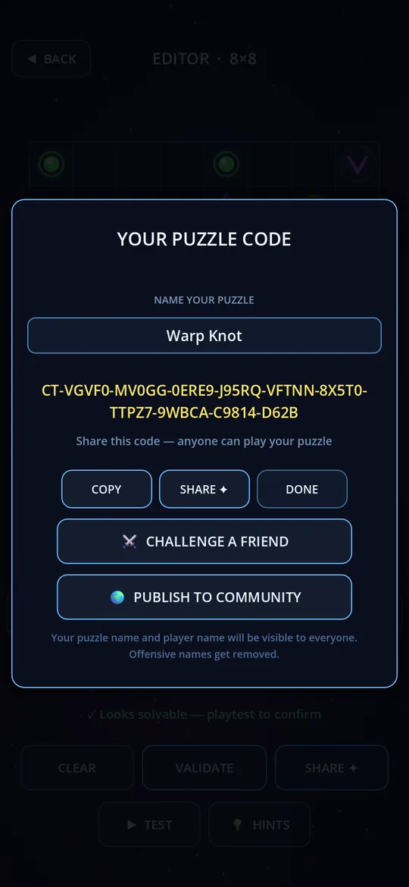

Solving puzzles is fun. Making one that stumps a friend is better. Circuit Trace has a full Puzzle Editor built in, with every tool unlocked from the start. Here's how to go from an empty grid to a puzzle code in your group chat.



Step 1: open the editor and pick a size
From the main menu, open the Creator and tap CREATE A PUZZLE. Choose a grid: 5×5 for a quick puzzle, 6×6 for a standard one, 7×7 for a challenge, or 8×8 for something serious.
Step 2: place the dots
With the ● DOTS tool, tap a colour, then tap two cells to make a pair. You can place up to 8 pairs on the biggest board. The status line tells you how many pairs you've placed and how many more are allowed.
Step 3: add pieces (optional)
- ▶ DIODE: tap a cell to place a one-way arrow. Tap it again to rotate it (right, down, left, up), and once more to remove it. Pick a colour first to lock the diode to that pair. More in how diodes work.
- ◉ PORTAL: tap an empty cell, then a second one. The two are linked. More in how portals work.
- ★ STAR: tap a cell to place a bonus star, tap again to remove it.
- ◆ CHECK: pick a colour, then tap a cell. That colour's line must pass through the checkpoint.
Each grid size has a maximum for diodes, portals, stars and checkpoints, and the editor tells you when you hit it.
Step 4: validate
Tap VALIDATE. The editor runs a real solver on your board. If it says Solvable, you're good. If not, it tells you why: a colour that can't connect, pairs that block each other, a checkpoint that its colour can't reach, or a board that's simply too tangled. Move a dot and try again.
Step 5: playtest
Tap TEST and play your own puzzle. Solvable isn't the same as fun. If you solved it in three seconds, your friends will too.
Step 6: share it
Tap SHARE, give your puzzle a name, and you get a code like CT-D04B5-2Y9G0-C2EGT-V0000-00000-0000B. Copy it, send it to a friend, challenge a friend directly, or publish it to the Community so every player can try it and like it. Your puzzles are saved in MY PUZZLES, with room for five.
Friends who don't have the game yet can paste the code on our play-a-code page and solve it in their browser.
Five tips for puzzles people love
1. Draw the solution first
Plan the finished board in your head or on paper: long, winding lines that fill the grid. Then place each line's two ends as the dots. Puzzles built this way are always solvable and usually interesting.
2. Avoid straight, short pairs
Two dots on the same row with nothing in between connect themselves. They're filler. Pairs that have to bend around each other are where the puzzle lives.
3. Make the long line the key
Give one pair a long, surprising route. The best puzzles have one line that feels impossible until it clicks.
4. Use pieces to block shortcuts
If testers find an easy route you didn't intend, a single diode or checkpoint can close it off.
5. Name it
A name like "Neon Spiral" travels further than "Puzzle #3". It shows up in the share message and in the Community.
Curious how a whole puzzle fits in one code? Read the math behind short codes.
Get Circuit Trace free on Google Play and open the Creator: every editor tool is free.
Frequently asked questions
Is the Circuit Trace puzzle editor free?
Yes. Every editor tool is unlocked from the start, and sharing and publishing are free.
What grid sizes can I use in the editor?
From 5×5 up to 8×8, with up to 8 colour pairs on the biggest board.
How do friends play my puzzle?
Send them the code. In the app they open the Creator, tap PLAY SHARED CODE and paste it. Without the app they can play it on circuittrace.app/puzzle/.